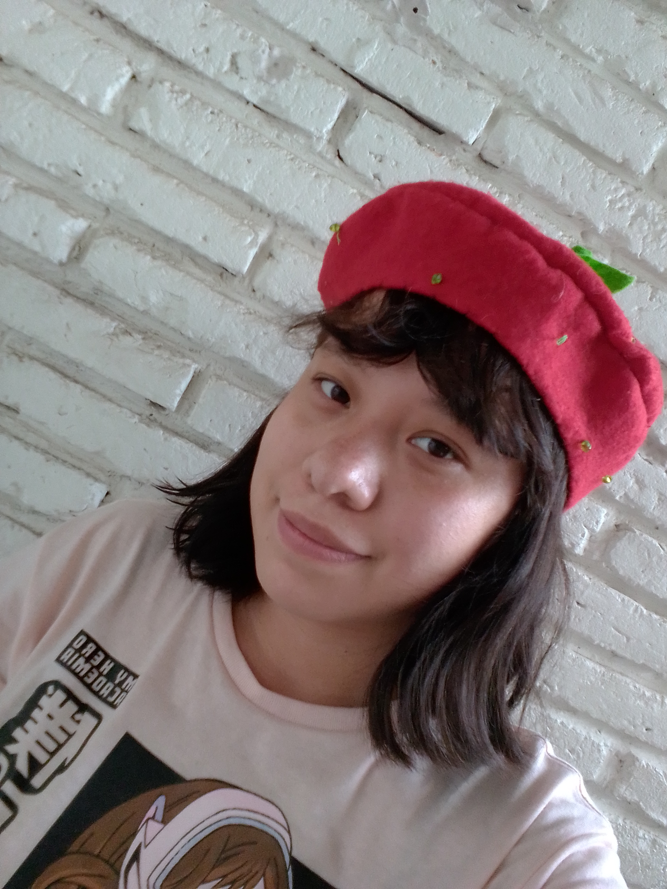

Evelyn Odette Palomino Alducin

Soy Evelyn, estudio en la Benemérita Universidad Autónoma de Puebla.
Tengo 20 años de edad y curso el séptimo semestre de la licenciautura de Diseño gráfico.
Me gustan la ilustración, el modelado 3D y la publicidad.
En este sitio web encontrarás varios de mis trabajos realizados en la materia de interfaces gráficas, utilizando herramientas de HTML y CSS.
Espero que disfrutes tu estancia, muchas gracias.